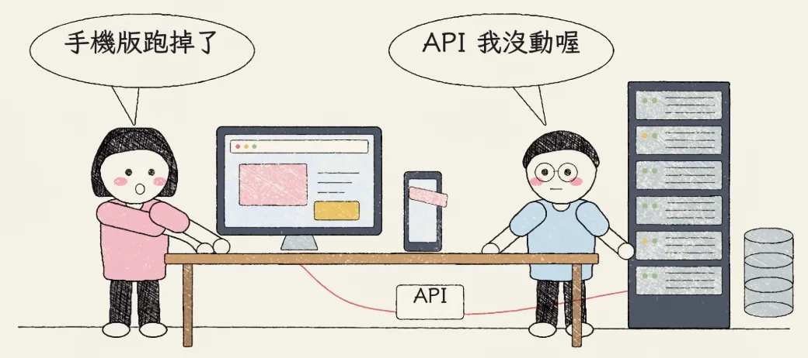
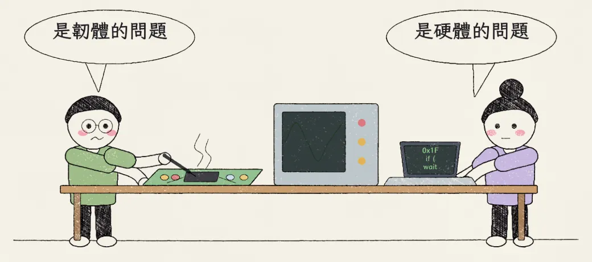
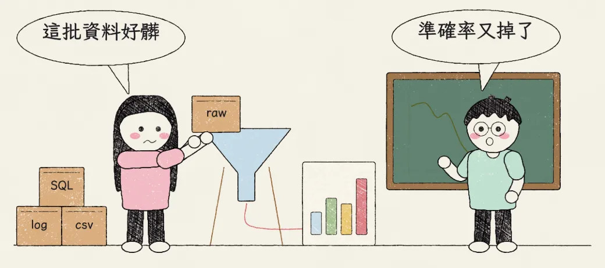
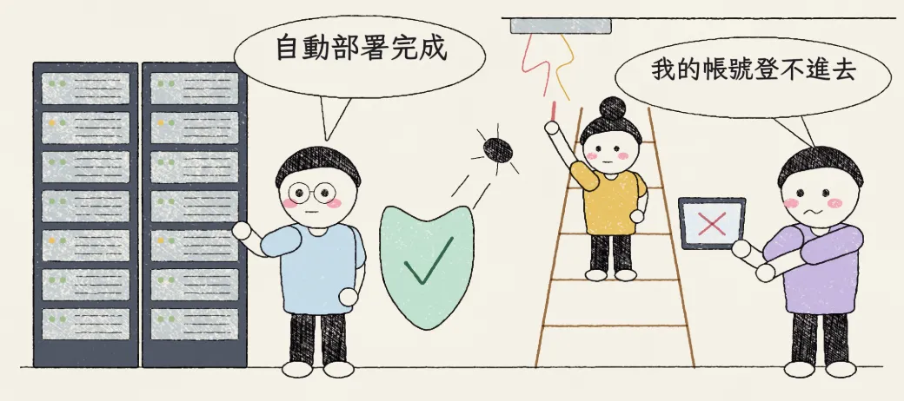

雖然本遊戲把所有 IT 的工作都簡化成一樣的，但實際上 IT 領域下的不同職稱都有自己的專業。
本圖鑑只列出較為常見的分類和職稱，實際上因應各個團隊的職場文化，每個團隊的職稱或業務會略有不同。
軟體研發與工程（Software / RD）

- 前端工程師：負責網頁的使用者介面與互動體驗：HTML（HyperText Markup Language，超文件標示語言）、CSS（Cascading Style Sheets，階層式樣式表）、JavaScript。
- 後端工程師：負責伺服器、資料庫邏輯與 API（Application Programming Interface，應用程式介面）開發（Java、Python、PHP、Ruby）。
- 全端工程師：兼顧前後端開發。
- App 工程師（iOS／Android）：開發 Apple iOS 或 Android 等行動裝置的應用程式（App：Application）。
硬體與底層技術（Hardware / Embedded）

- 硬體工程師：電路設計、PCB（Printed Circuit Board，印刷電路板）Layout 與電子元件研發。
- 韌體工程師（Firmware）：寫入硬體晶片中的底層控制程式（C／C++／Assembly）。
- 嵌入式系統工程師：結合硬體與微控制器的系統開發。
資料與 AI 領域（Data / AI）

- 資料工程師：建立與維護巨量資料的收集、前處理與保存（Hadoop、Spark、SQL）。SQL（Structured Query Language，結構化查詢語言）。
- 演算法工程師：運用統計學與機器學習建立預測模型（Python、TensorFlow）。
- AI 顧問：大致瞭解大多數能用來實作人工智慧（AI，Artificial Intelligence）的技術（包括但不限於數學統計、機器學習、資料探勘、最佳化方法等）的專家，能根據需求給予解決方案或研發方向，通常會和上述兩者合作，以及軟體研發的 IT 合作。
維運、安全與支援（Ops & Security）

- DevOps／雲端工程師：負責 CI/CD（Continuous Integration／Continuous Delivery，持續整合／持續交付）自動化部署、Docker／K8s（Kubernetes）容器化與雲端架構管理，例如 AWS（Amazon Web Services）、GCP（Google Cloud Platform）、Azure。
- 網路安全工程師／資安工程師：系統漏洞檢測、防火牆設定與防範駭客入侵。
- IT 技術支援（IT Support／MIS）：企業內部軟硬體故障排除、帳號管理與日常維運；台灣職缺常寫「MIS 工程師」「資訊管理人員」。IT（Information Technology，資訊科技）、MIS（Management Information System，資訊管理系統）。
這個圖鑑旨在介紹 IT 領域下的常見分工，並讓大家理解 IT 領域內的工作真的南轅北轍，希望大家不要再叫演算法工程師去裝 Wi-Fi 分享器，或是叫 MIS 寫公司下午茶團購網頁了。